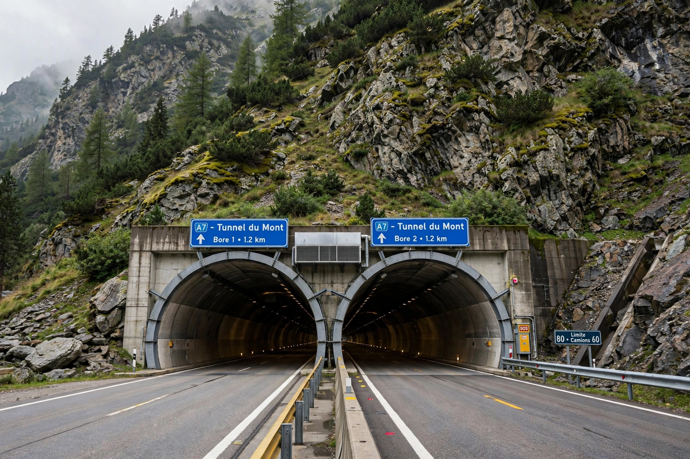

Tunnel

A tunnel is an underground passageway, dug through surrounding soil, earth or rock, and enclosed except for the entrance and exit, commonly at each end. A tunnel may be for foot or vehicular road traffic, for rail traffic, or for a canal. Some tunnels are used to convey water for consumption or hydroelectric power generation, or as sewers. Underground cities and military installations may also employ tunnels.
History
Underground passages were dug in antiquity: the Babylonians built a tunnel under the Euphrates around 2160 BC, and qanat water tunnels spread across Persia and the Mediterranean world. The modern era of tunnelling began with canal tunnels in the 18th century and expanded rapidly with the railways. Marc Isambard Brunel's tunnelling shield enabled construction of the Thames Tunnel in London (opened 1843), the first tunnel built under a navigable river.
Construction methods
Major methods include cut-and-cover, in which a trench is excavated and roofed over; bored tunnels, driven by tunnel boring machines (TBMs) that excavate a circular cross-section; drill and blast in hard rock; and immersed tube tunnels, in which prefabricated sections are sunk into a dredged trench under water. Choice of method depends on geology, groundwater, depth, length and surface disruption constraints.
Notable tunnels
The Gotthard Base Tunnel in Switzerland (57.1 km, opened 2016) is the world's longest railway tunnel. The Seikan Tunnel in Japan (53.9 km) includes the longest undersea section of any rail tunnel, while the Channel Tunnel between England and France (50.5 km, opened 1994) has the longest undersea portion at 37.9 km. The Lærdal Tunnel in Norway (24.5 km) is the world's longest road tunnel.
Safety
Tunnel fires — such as the 1999 Mont Blanc Tunnel fire, which killed 39 people — led to stricter standards for ventilation, cross-passages, emergency exits and fire-resistant linings. Road tunnels require systems to exhaust vehicle emissions and control smoke during fires.
See also: Channel Tunnel, Bridge.